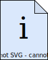

ASAM Deliverables

The deliverables of a standard package consist of standard documents and other files.
A standard package consists of at least one specification document.
Other deliverable items, as listed on this page, are optional.
Standard documents
Specification
Each ASAM standard contains at least one specification document.
Specification documents contain normative information.
Each Specification document may be prepended by its type.
Typically, this is
-
a format description (data structure) or
-
a protocol definition or
-
an API
and has the following properties:
-
Platform-independent
-
Technology-independent
-
Supplier-independent
-
Implementation-independent
-
Does not contradict any other ASAM standard
These documents is normative by default.
They may contain non-normative content as long as it is clearly marked as such.
Reference
A standard may contain one or more Reference documents.
A Reference document contains information related to implementers.
The name of each Reference document is prepended by its type or target audience.
For example, a Reference for programmers would be named "Programmers Reference".
This information is non-normative.
Guidelines
A standard may contain one or more Guidelines documents.
A Guidelines document contains information related to users.
The name of each Guidelines document is prepended by its type or target audience.
For example, a Guidelines document for modeling scenarios would be named "Modelling Guidelines".
This information is non-normative.
Supplemental material
Sometimes, a project’s deliverable does not fit any of the above.
In this case, it is considered to be a so-called "Supplementary" material.
Note that Supplemental material is only allowed if deemed absolutely necessary and if it is neither Specification, Reference, nor Guidelines.
The following list contains common examples and is non-exhaustive.
| If you are unsure if a deliverable is Supplementary material, check with your Office Responsible. |
Model files
Model files typically contain the object model of the standard. A typical example of a model file in ASAM standards are UML models created with the tool "Enterprise Architect" (.ea).
Schema files
Schema files define the formal structure and syntax of text files. They are used for automated schema validation. Typical examples of schema files are XML definition files (.xsd) or Google protocol buffers definition files (.proto).
Interface definition files
Interface definition files define programmatic interfaces, such as APIs (Application Programming Interface). They are used for automatic code generation of the standardized interface for specific programming languages. A typical example of an interface definition file is the Interface Description Language file (.idl).